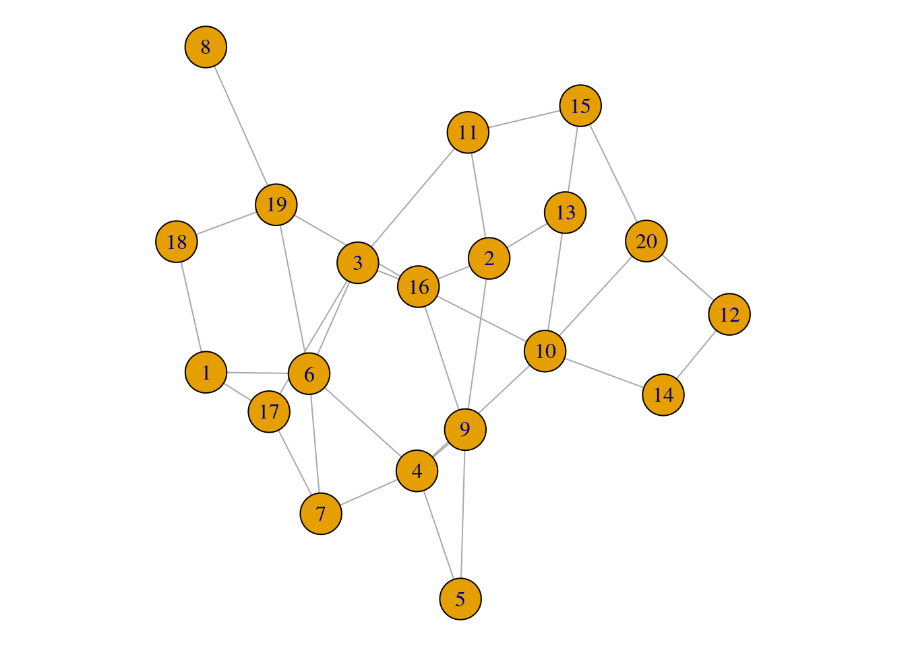
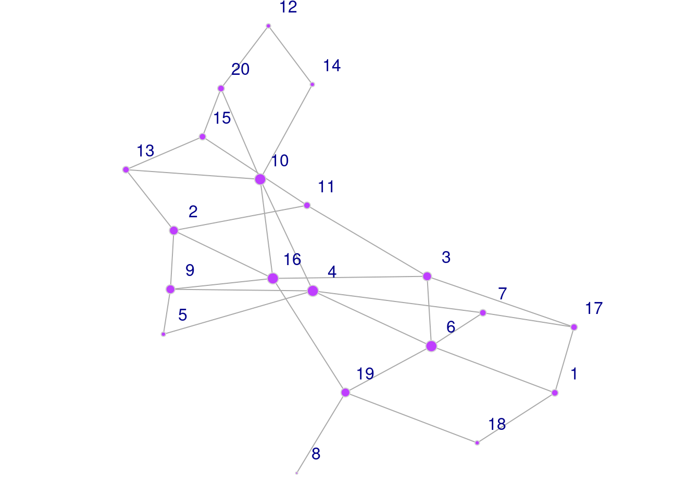

VPF NetSci Tutorial
Part 2: Demonstration
Cynthia Siew
7/25/2022
Set up
library(igraph)##
## Attaching package: 'igraph'## The following objects are masked from 'package:stats':
##
## decompose, spectrum## The following object is masked from 'package:base':
##
## unionload('data/example-data.RData')There should be 4 objects loaded into your R workspace: -
pnet_edgelist - pnet_adjmat -
snet_edgelist - snet_adjmat
pnet refers to a section of the phonological network
first described by Vitevitch (2008). The nodes represent English words,
and edges connect words that are phonological neighbors of each other
based on the 1-edit distance metric computed on their phonological
transcriptions (Luce & Pisoni, 1998). E.g., /k@t/–/k@p/ are
neighboring nodes. Specifically, this network is the 2-hop network of
the word ‘speech’ - in addition to ‘speech’ itself, its immediate
phonological neighbors and the neighbors of its neighbors are included
in this representation.
snet refers to a section of the word association network
using data from De Deyne et al. (2020). The nodes represent English
words, and edges connect words that are produced as free associations of
other words. E.g., “cat”–“dog” are neighboring nodes. This network has
edges with 2 interesting properties. (i) Each edge has a
weight attribute that corresponds to the associative
strength of two nodes, or the proportion of participants who provided a
specific response to the cue word. (ii) The edges are also
directed such the direction goes from the cue word
to the response word, i.e., “cat”->“dog”. Specifically, this
network is the 1-hop network of the word ‘cheese’ - in addition to
‘cheese’ itself, its immediate associates and the cue words that led to
the response ‘cheese’ are included in this representation. See also https://smallworldofwords.org/en/project/research for
more information.
edgelist refers to a type of network data representation
where each row represents a single edge in the network with at least 2
columns where the labels of connected nodes are provided. The number of
rows in the edge list corresponds to the number of edges in the network.
Additional columns can be specified that provide more information about
the edges (e.g., type, weight).
adjmat refers to a type of network data representation
known as an adjacency matrix where the edge connectivity is represented
in the matrix. The number of rows and columns correspond to the number
of nodes in the network. A non-zero value in the [i,j] element of the
adjacency matrix indicates the presence of a link between node
i and node j.
head(pnet_edgelist, 3)## [,1] [,2]
## [1,] "biC;beach" "iC;each"
## [2,] "biC;beach" "liC;leach"
## [3,] "iC;each" "liC;leach"head(snet_edgelist, 3)# pnet_adjmat[1:5, 1:5]
# snet_adjmat[1:5, 1:5]Creating a network from your data
Example 1: Phonological network with undirected and unweighted edges
From an adjacency matrix
g_pnet_adjmat <- graph_from_adjacency_matrix(
adjmatrix = pnet_adjmat,
mode = 'undirected',
weighted = NULL
)## Loading required package: Matrixsummary(g_pnet_adjmat)## IGRAPH f03348c UN-- 39 121 --
## + attr: name (v/c)From an edge list
g_pnet_edgelist <- graph_from_edgelist(
el = pnet_edgelist,
directed = FALSE
)
summary(g_pnet_edgelist)## IGRAPH a861a07 UN-- 39 121 --
## + attr: name (v/c)Example 2: Semantic network with directed and weighted edges
From an adjacency matrix
g_snet_adjmat <- graph_from_adjacency_matrix(
adjmatrix = snet_adjmat,
mode = 'directed',
weighted = 'weight'
)
summary(g_snet_adjmat)## IGRAPH 628c104 DNW- 211 1332 --
## + attr: name (v/c), weight (e/n)Note that the direction of edges in directed networks follows this convention: ‘From’ = rows; ‘To’ = columns
Here is an example:
snet_adjmat[1:5, 1:5] # from 'age' to 'aging'## 5 x 5 sparse Matrix of class "dgCMatrix"
## age aged ages aging american
## age . . . 0.02 .
## aged . . . . .
## ages . . . . .
## aging . . . . .
## american . . . . 0.02E(g_snet_adjmat) |> head() # '|>' pipes output from one function into another ## + 6/1332 edges from 628c104 (vertex names):
## [1] mature ->age maturity->age mature ->aged maturity->aged
## [5] age ->aging maturity->agingFrom an edge list
g_snet_edgelist <- graph_from_data_frame(
d = snet_edgelist,
directed = TRUE,
vertices = NULL
)
summary(g_snet_edgelist)## IGRAPH d756b80 DNW- 211 1332 --
## + attr: name (v/c), weight (e/n)The column containing the edge weights must be labelled ‘weight’ in
the data frame. Note that we used the graph_from_data_frame
function here instead of the graph_from_edgelist function,
as the latter does not have an argument to specify the edge weights.
Measuring the network
Once we have a network representation, the tools of network science can be applied to analyze the networks in different ways. In this tutorial we focus on a descriptive analysis of the network and review various network measures that can be used to describe or quantify network structure at three different levels of the network: the micro-level (referring to the local structure and other properties of individual nodes), the meso-level (subgroups or clusters of nodes), and the macro-level (referring to the overall or global structure of the network).
Micro-level (node-level)
Micro-level network measures provide you with information about specific nodes in the network. These are generally known as centrality measures in the network science literature. Centrality is the network scientist’s way of quantifying the relative “importance” of a given node relative to other nodes in the network. There are many different definitions of what counts as “central”, as you will see in the following subsections. There is no single “correct” or “best” metric - which metrics are most useful to you will depend on the nature of the system that you are modeling as well as the network behavior that you interested in.
Degree (unweighted edges)
The degree of node i refers to the number of edges or links connected to that node.
If your network has directed edges, in-degree refers to the number of edges that are going towards the target node, whereas out-degree refers to the number of edges that are going away from the target node.
# undirected network
degree(graph = g_pnet_adjmat) # for all nodes in the network## xpik;apeak biC;beach sid;cede iC;each liC;leach pi;p
## 2 5 4 5 5 9
## p@C;patch pis;peace piC;peach pik;peak pil;peal piz;pease
## 6 9 22 12 9 9
## pit;peat pin;peen pip;peep piv;peeve pRC;perch pIC;pitch
## 9 9 9 9 6 6
## poC;poach pWC;pouch priC;preach pUC;putsch riC;reach sik;seek
## 6 6 2 6 6 5
## slik;sleek snik;sneak sped;spade spik;speak spEk;speck spEd;sped
## 3 3 3 11 5 4
## spiC;speech spid;speed spYk;spike spok;spoke spuk;spook sp^d;spud
## 3 8 4 4 4 3
## stid;steed swid;swede tiC;teach
## 3 3 5degree(graph = g_snet_edgelist, v = 'cheese') # for a specific node in the network ## cheese
## 231# directed network
degree(graph = g_snet_adjmat, v = 'cheese', mode = 'in') # in-degree = incoming edges## cheese
## 185degree(graph = g_snet_adjmat, v = 'cheese', mode = 'out') # out-degree = outgoing edges ## cheese
## 46degree(graph = g_snet_adjmat, v = 'cheese', mode = 'all') # in-degree + out-degree## cheese
## 231Strength (weighted edges)
The strength of node i refers to the sum of its adjacent edge weights. Only applicable to weighted networks.
strength(graph = g_snet_adjmat) |> head(5)## age aged ages aging american
## 0.57 0.55 0.04 0.17 0.40# for directed networks
strength(graph = g_snet_adjmat, v = 'age', mode = 'in') # in-degree = incoming edges## age
## 0.38strength(graph = g_snet_adjmat, v = 'age', mode = 'out') # out-degree = outgoing edges ## age
## 0.19strength(graph = g_snet_adjmat, v = 'age', mode = 'all') # in-degree + out-degree## age
## 0.57Local Clustering Coefficient (unweighted)
The local clustering coefficient, C, of node i measures the ratio of the actual number of edges existing among nodes directly connected to the target node i to the number of all possible edges among these nodes.
C ranges from 0 to 1. When C = 0, none of the neighbors of a target node are neighbors of each other. When C = 1, every neighbor is also a neighbor of all the other neighbors of a target word.
You can think of the local clustering coefficient as providing a measure of the level of interconnectivity among the local neighborhood of the node.
rbind( # use of rbind to combine node labels and their C values
V(g_pnet_edgelist)$name,
transitivity(graph = g_pnet_edgelist, type = 'local') |> round(3)
) ## [,1] [,2] [,3] [,4] [,5] [,6]
## [1,] "biC;beach" "iC;each" "liC;leach" "pi;p" "pis;peace" "piC;peach"
## [2,] "1" "1" "1" "1" "1" "0.268"
## [,7] [,8] [,9] [,10] [,11] [,12]
## [1,] "p@C;patch" "xpik;apeak" "pik;peak" "pil;peal" "piz;pease" "pit;peat"
## [2,] "1" "1" "0.576" "1" "1" "1"
## [,13] [,14] [,15] [,16] [,17] [,18]
## [1,] "pin;peen" "pip;peep" "piv;peeve" "pRC;perch" "pIC;pitch" "poC;poach"
## [2,] "1" "1" "1" "1" "1" "1"
## [,19] [,20] [,21] [,22] [,23] [,24]
## [1,] "pWC;pouch" "priC;preach" "pUC;putsch" "riC;reach" "sid;cede" "sik;seek"
## [2,] "1" "1" "1" "0.733" "0.5" "0.4"
## [,25] [,26] [,27] [,28] [,29]
## [1,] "slik;sleek" "snik;sneak" "spik;speak" "spEk;speck" "sped;spade"
## [2,] "1" "1" "0.218" "0.6" "1"
## [,30] [,31] [,32] [,33] [,34]
## [1,] "spEd;sped" "spiC;speech" "spid;speed" "spYk;spike" "spok;spoke"
## [2,] "0.5" "0.333" "0.25" "1" "1"
## [,35] [,36] [,37] [,38] [,39]
## [1,] "spuk;spook" "sp^d;spud" "stid;steed" "swid;swede" "tiC;teach"
## [2,] "1" "1" "1" "1" "1"transitivity(graph = g_pnet_edgelist, type = 'local', vids = 'spik;speak') |> round(3) # for a specific node in the network ## [1] 0.218A couple of things to note:
It is important to specify
type = localfor local clustering coefficients, as compared to the global clustering coefficient of the entire graph (this is a macro-level measure that we will visit later)Many of these functions contain additional arguments for indicating whether to consider the directionality and weights of the edges. If your graph is undirected and unweighted, these are ignored by default. If your graph is directed and weighted, you can indicate whether to include or exclude this information for the computation of the network measure. There will be examples of this in the following subsections.
Local Clustering Coefficient (weighted)
If you have a weighted network, you can compute local clustering
coefficients using Barrat et al.’s (2004) generalization of transitivity
to weighted networks by specifying type = 'weighted'. If
your network is unweighted, the generalization will return the
unweighted C (see example of ‘speak’ below).
# weighted network
transitivity(graph = g_snet_edgelist, type = 'local', vids = 'cheese') |> round(3) ## [1] 0.043transitivity(graph = g_snet_edgelist, type = 'weighted', vids = 'cheese') |> round(3) ## [1] 0.057# unweighted network
transitivity(graph = g_pnet_edgelist, type = 'local', vids = 'spik;speak') |> round(3)## [1] 0.218transitivity(graph = g_pnet_edgelist, type = 'weighted', vids = 'spik;speak') |> round(3)## [1] 0.218Closeness Centrality
Closeness centrality of node i is the inverse of the average of the length of the shortest path between node i and all other nodes in the network. If a node has high closeness centrality, it means that on average, it takes few steps to travel from that node to all other nodes in the network. If a node has low closeness centrality, it means that on average, it takes more steps to travel from that node to all other nodes in the network.
Closeness centrality is commonly viewed as an indicator of the accessibility of a node in the network from all other locations in the network.
# closeness centralities for directed networks, ignoring weights
closeness(graph = g_snet_edgelist, normalized = T, mode = 'all', weights = NA) |> head()## age aged ages aging american appetizer
## 0.5060241 0.5072464 0.5023923 0.5060241 0.5134474 0.5121951closeness(graph = g_snet_edgelist, normalized = T, mode = 'in', weights = NA) |> head()## age aged ages aging american appetizer
## 0.6666667 0.6666667 NaN 0.5000000 0.2790698 0.3279743closeness(graph = g_snet_edgelist, normalized = T, mode = 'out', weights = NA) |> head()## age aged ages aging american appetizer
## 0.3380282 0.3503650 0.3317422 0.3333333 0.3520408 0.3650794# weights are considered by default if graph has a weight attribute
closeness(graph = g_snet_edgelist, normalized = T, mode = 'all') |> head()## age aged ages aging american appetizer
## 18.46966 14.54294 18.60053 18.48592 19.84877 17.90281closeness(graph = g_snet_edgelist, normalized = T, mode = 'all', weights = NULL) |> head() # if weights = NULL and there is an edge attribute called weight, this will be used by default ## age aged ages aging american appetizer
## 18.46966 14.54294 18.60053 18.48592 19.84877 17.90281Note that closeness centrality can only be meaningfully computed for connected graphs. If there are distinct network components, this means that for some sets of node pairs, the path between them does not exist and closeness cannot be computed. Usually, network scientists focus their analysis on the largest connected component of the network and ignore the smaller connected components (viewed as outliers). In the Appendix there is a section that describes how to check for the presence of network components in your network (i.e., not fully connected) and how to extract the component you want for further analysis.
It is typical to have normalized = T so that the values
are normalized with respect to the size of the network. As usual, you
can specify the mode and weights arguments
accordingly if you have directed/weighted networks to get the
corresponding versions of closeness centrality computed. However,
caution is needed as the interpretation of weights in this
context is to interpret them as distances: higher
weights = longer distances (From igraph manual: “If the
graph has a weight edge attribute, then this is used by default. Weights
are used for calculating weighted shortest paths, so they are
interpreted as distances.”). It is highly recommended to read the manual
carefully to understand the measures that are being computed.
Betweenness Centrality
Betweenness centrality is a measure of the degree to which nodes stand in between each other. A node with a high betweenness centrality is a node that is frequently found in the short paths of other pairs of nodes in the network. In contrast, a node with a low betweenness centrality is a node that is not usually found in the short paths of node pairs. Betweeenness can be viewed as an indicator if whether a node represents a “bottleneck” in the system.
# undirected, unweighted network
betweenness(graph = g_pnet_adjmat, normalized = T, weights = NA, directed = F) |> head(10)## xpik;apeak biC;beach sid;cede iC;each liC;leach pi;p p@C;patch
## 0.00000000 0.00000000 0.01730678 0.00000000 0.00000000 0.00000000 0.00000000
## pis;peace piC;peach pik;peak
## 0.00000000 0.53840683 0.27192982# directed, weighted network
betweenness(graph = g_snet_adjmat, normalized = T, weights = NULL, directed = T) |> head(10)## age aged ages aging american appetizer
## 0.0002050581 0.0009881305 0.0000000000 0.0001367054 0.0103941672 0.0098454470
## artisan asparagus aubergine baguette
## 0.0000000000 0.0002904990 0.0000000000 0.0148101856The same considerations (about connected graphs, additional arguments for weighted and directed graphs, normalization, interpretation of weights as distances) from the closeness centrality section applies to this section as well.
Page Rank Centrality
PageRank is a centrality measure developed by Google to rank webpages (the historic paper describing the algorithm can be viewed here. The general idea is that a random walker will traverse the network space and their paths are biased by the link connectivity structure of the network. The random walker restarts the walk after some time (“boredom”). The number of visits received by a node provides an indicator of its importance in the network. Intuitively, we expect that nodes have a high PageRank if there are many nodes that point to it, or if there are nodes that point to it that themselves have a high PageRank.
# undirected, unweighted network
page_rank(graph = g_pnet_edgelist, directed = F, weights = NA)$vector |> head(10)## biC;beach iC;each liC;leach pi;p pis;peace piC;peach p@C;patch
## 0.02109911 0.02109911 0.02109911 0.02849254 0.02849254 0.07464375 0.02307469
## xpik;apeak pik;peak pil;peal
## 0.01085805 0.04130385 0.02849254# directed, weighted network
page_rank(graph = g_snet_edgelist, directed = T, weights = NULL)$vector |> head(10)## age aged ages aging american appetizer
## 0.0016032147 0.0012431529 0.0007544659 0.0009711727 0.0012917020 0.0008032350
## artisan asparagus aubergine baguette
## 0.0007544659 0.0008365034 0.0011033372 0.0015875815The weights and directed arguments can be
adjusted depending on your graph type. It is important to note that the
interpretation of edge weights here is that of “connection strength”
(from igraph manual: “This function interprets edge weights
as connection strengths. In the random surfer model, an edge with a
larger weight is more likely to be selected by the surfer.”). This is
different from the “distance” interpretation of edge weights by
closeness and betweenness.
Meso-level (community structure)
A common feature of many real-world networks is that they have community structure. Nodes are considered to be part of the same community if the density of connections among those nodes is relatively higher than the density of connections between nodes from different communities (Newman, 2006).
Modularity, Q, is a measure of the density of links inside communities in relation to the density of links between communities (Fortunato, 2010). Networks with higher Q are said to show strong evidence of community structure.
How do network scientists “find” communities in networks?
Many community detection methods have been developed by network scientists to detect communities in networks. It is sort of like a “clustering analysis” for network scientists. Here we will go through four examples that reflect broad classes of community detection techniques. Each differs in their implementation, and reflects the creator’s implicit definition of what is a community.
Note: In this tutorial the community detection is only implemented on
g_pnet_adjmat, an undirected and unweighted network. The
usual arguments for weights and directed are
available in the community detection function if you wish to toggle
these on for weighted and directed networks.
Edge betweenness (“divisive method”)
The core idea behind this technique is that edges connecting separate communities tend to have high edge betweenness as all the shortest paths from one community to another must traverse through them.
The algorithm works by calculating the edge betweenness of all edges the graph, removing the edge with the highest edge betweenness score, then recalculating edge betweenness of remaining edges and again removing the one with the highest score. This repeats until modularity cannot be improved further.
# run the community detection algorithm
results_edge <- cluster_edge_betweenness(graph = g_pnet_adjmat)
# overall results
modularity(results_edge)## [1] 0.5622225sizes(results_edge)## Community sizes
## 1 2 3 4 5
## 9 6 8 10 6# specific community membership for each node
cbind(
results_edge$names,
results_edge$membership
) |> head(5)## [,1] [,2]
## [1,] "xpik;apeak" "1"
## [2,] "biC;beach" "2"
## [3,] "sid;cede" "3"
## [4,] "iC;each" "2"
## [5,] "liC;leach" "2"Saving the community detection results as a communities
object enables the use of special functions like
modularity() and sizes() to obtain the
modularity of the network and its community sizes. I have also included
code that shows how to extract the community memberships of all nodes in
the network for further analysis. This applies to the other community
detection algorithms as well.
Louvain method (“greedy, maximization method”)
The core idea behind this method is that communities are essentially “mergers” of small communities (Blondel et al., 2008), reflecting the self-similar nature of complex networks.
- Each node is assigned to one community such that there are as many communities as there are nodes. Then remove node i from its community and placing it in the community of the neighbor which yields the greatest gain in modularity.
- repeat for all nodes in the network
- A new network is built where nodes are the communities found in the previous phase. Repeat Step 1.
- repeat Step 1 and 2 until it is not possible to further increase the value of Q
# run the community detection algorithm
results_louvain <- cluster_louvain(graph = g_pnet_adjmat)
# overall results
modularity(results_louvain)## [1] 0.5795028sizes(results_louvain)## Community sizes
## 1 2 3 4 5
## 9 7 8 9 6# specific community membership for each node
cbind(
results_louvain$names,
results_louvain$membership
) |> head(5)## [,1] [,2]
## [1,] "xpik;apeak" "1"
## [2,] "biC;beach" "2"
## [3,] "sid;cede" "3"
## [4,] "iC;each" "2"
## [5,] "liC;leach" "2"Random walker (“dynamic method”)
The core idea behind this method is that if there are communities in the network, a random walker will tend to spend more time inside the community than outside.
The Walktrap algorithm groups nodes together based on the similarities of the paths taken by the random walker starting from that node. The idea is to merge sets of vertices that have low “distance” from each other.
# run the community detection algorithm
results_walktrap <- cluster_walktrap(graph = g_pnet_adjmat)
# overall results
modularity(results_walktrap)## [1] 0.5608906sizes(results_walktrap)## Community sizes
## 1 2 3 4 5
## 10 7 10 6 6# specific community membership for each node
cbind(
results_walktrap$names,
results_walktrap$membership
) |> head(5)## [,1] [,2]
## [1,] "xpik;apeak" "1"
## [2,] "biC;beach" "4"
## [3,] "sid;cede" "2"
## [4,] "iC;each" "4"
## [5,] "liC;leach" "4"Infomap (“information-theoretic method”)
The core idea behind this algorithm is to leverage on information-theoretic methods to “describe” the information flow of the entire system (based on random walks).
The Infomap algorithm attempts to describe the random walker’s trajectory using the fewest number of “bits” of information. Communities are groups of nodes that receive new “names” during the compression.
# run the community detection algorithm
results_infomap <- cluster_infomap(graph = g_pnet_adjmat)
# overall results
modularity(results_infomap)## [1] 0.5795028sizes(results_infomap)## Community sizes
## 1 2 3 4 5
## 9 7 8 9 6# specific community membership for each node
cbind(
results_infomap$names,
results_infomap$membership
) |> head(5)## [,1] [,2]
## [1,] "xpik;apeak" "1"
## [2,] "biC;beach" "2"
## [3,] "sid;cede" "3"
## [4,] "iC;each" "2"
## [5,] "liC;leach" "2"Comparison of methods
Fortunato (2010) summarized papers that conducted a comprehensive comparison of community detection techniques.
Generally, Rosvall & Bergstorm’s Infomap and Blondel et al.’s greedy modularity maximization method performed the best. Both also were relatively fast algorithms.
The code below illustrates the similarities and differences in the results of the various community detection methods.
# comparing the Qs
rbind(
c('edge_betweenness', 'Louvain', 'Walktrap', 'Infomap'),
c(modularity(results_edge), modularity(results_louvain), modularity(results_walktrap), modularity(results_infomap)) |> round(3)
)## [,1] [,2] [,3] [,4]
## [1,] "edge_betweenness" "Louvain" "Walktrap" "Infomap"
## [2,] "0.562" "0.58" "0.561" "0.58"# comparing community membership
par(mar=c(0,0,0,0)+.6, mfrow = c(2,2)) # reduce margins and plot both networks together
set.seed(1)
fixed_l <- layout_with_fr(g_pnet_adjmat) # to fix node layout across plots
plot(results_edge, g_pnet_adjmat, layout = fixed_l, main = 'edge betweenness')
plot(results_louvain, g_pnet_adjmat, layout = fixed_l, main = 'Louvain')
plot(results_walktrap, g_pnet_adjmat, layout = fixed_l, main = 'Walktrap')
plot(results_infomap, g_pnet_adjmat, layout = fixed_l, main = 'Infomap')Macro-level (network-level)
In this section, we will review network science measures that describe the overall or global structure of the entire network. You can think of these measures as providing a “bird’s eye view” of your network, and they are useful for comparing different network representations.
Average Shortest Path Length
Average shortest path length (ASPL) refers to the mean of the shortest possible path between all possible pairs of nodes in the network. (This loosely corresponds to the idea of “six degrees of separation” in social networks.)
# undirected, unweighted network
average.path.length(graph = g_pnet_adjmat, weights = NA, directed = F)## [1] 2.557355average.path.length(graph = g_pnet_adjmat) # default values for weights and directed give the same values since this is an undirected, unweighted network ## [1] 2.557355# an alternative function - both give the same result
mean_distance(graph = g_pnet_adjmat)## [1] 2.557355# directed, weighted network
mean_distance(graph = g_snet_adjmat, weights = NULL, directed = T)## [1] 0.1090017mean_distance(graph = g_snet_adjmat, weights = NULL, directed = F) # ignore direction ## [1] 0.06239856mean_distance(graph = g_snet_adjmat, weights = NA, directed = T) # ignore weights ## [1] 2.926504Global Clustering Coefficient
Global clustering coefficient refers to the number of closed triangles in the network relative to the number of possible triangles. It is a measure of overall level of local connectivity among nodes in the network.
A simple way of thinking about this concept is that it is measuring the probability that each pair of “friends” of a given node are also friends with each other.
transitivity(graph = g_pnet_adjmat, type = 'global')## [1] 0.6805869transitivity(graph = g_snet_adjmat, type = 'global')## [1] 0.1588113Network Density
Network density refers to the ratio of the number of (existing) edges and the number of possible edges among nodes in the network.
graph.density(graph = g_pnet_adjmat)## [1] 0.1632928graph.density(graph = g_snet_adjmat)## [1] 0.03006093Network Diameter
Network diameter refers to length of the longest shortest path between nodes in the network. Instead of getting the mean of all the shortest paths as you did in ASPL, what is the maximum length of those short paths?
# undirected, unweighted graph
diameter(graph = g_pnet_adjmat, directed = F, weights = NA)## [1] 4diameter(graph = g_pnet_adjmat)## [1] 4# directed, weighted graph
diameter(graph = g_snet_adjmat, directed = T, weights = NULL)## [1] 0.88diameter(graph = g_snet_adjmat, directed = F, weights = NULL) # ignore direction ## [1] 0.56diameter(graph = g_snet_adjmat, directed = T, weights = NA) # ignore weights ## [1] 7Appendix: Network Visualization
The purpose of this section is to provide a gentle introduction to
network visualization in igraph. Generally, it is advisable
to only visualize small networks or a subset of a larger network; this
is because it quickly becomes too challenging to develop a meaningful
visual representation of a large network with many nodes and edges.
For the purposes of the tutorial we will work with a randomly
generated network g. The default plot does not look
nice…
set.seed(5)
g <- sample_gnp(n = 20, p = 0.20) # 20 nodes with edge probability of 0.2
plot(g)
Node Parameters
This code chunk illustrates a few of the most commonly used node/vertex parameters in visualization.
par(mar=c(0,0,0,0)+.1) # reduce margins
plot(g,
vertex.color = 'darkorchid1', # change color of nodes
vertex.frame.color = 'lightgrey', # change the outline color of nodes
vertex.label.dist = 1.7, # adjust distance of node label from node
vertex.label.family = 'sans', # change font
vertex.size = degree(g) # size of node corresponds to its degree
)
Edge Parameters
To illustrate the edge parameters, a weighted and directed network
gw is created. The code chunk below illustrates a few of
the most commonly used edge parameters in visualization.
set.seed(9)
gw <- sample_gnp(n = 20, p = 0.20, directed = T) # 20 nodes with edge probability of 0.2, edges are directed
E(gw)$weight <- sample(1:5, size = gsize(gw), replace = T) # randomly add edge weights of 1 to 5
summary(gw) # the 'DW' indicates a directed and weighted network ## IGRAPH 7a14a71 D-W- 20 72 -- Erdos-Renyi (gnp) graph
## + attr: name (g/c), type (g/c), loops (g/l), p (g/n), weight (e/n)par(mar=c(0,0,0,0)+.1) # reduce margins
plot(gw,
edge.color = 'darkolivegreen', # color of edges
edge.width = E(gw)$weight, # the width of edges corresponds to the edge weight
edge.curved = 0.5, # add curvature to edges
edge.arrow.width = 0.5, # adjust arrow width
edge.arrow.size = 0.8 # adjust arrow size
)Network Layouts
You can also adjust the overall layout of the network. These layouts
are different network visualization approaches that use various
algorithms to decide how nodes should be best positioned on a 2D plane,
while considering the nature of their edge connectivity. There are many
different layouts available - you can either check out the
igraph manual or check out this online tutorial (https://kateto.net/network-visualization) for
inspiration.
par(mar=c(0,0,0,0)+.4, mfrow = c(1,2)) # reduce margins and plot both networks together
set.seed(1)
plot(g, layout = layout_in_circle, main = 'circle')
plot(g, layout = layout_with_gem, main = 'gem')Appendix: Network Components
In this section, the goal is to introduce useful R code for (i) detecting if your network comprises of a single connected component or multiple, and (ii) extracting the largest connected component of the network (or another network component) as a new graph object for additional analysis.
How many components does my network have?
set.seed(88)
gz <- sample_gnp(n = 20, p = 0.10)
plot(gz)gz_comp <- components(gz)
gz_comp$membership # component membership ## [1] 1 1 1 2 1 1 1 1 1 1 1 1 1 1 1 1 1 1 3 1gz_comp$csize # component size ## [1] 18 1 1gz_comp$no # number of components ## [1] 3How can I extract a specific network component as a new network object?
We can use the induced_subgraph function to create
“subsets” of a network by selecting the nodes that you wish to keep.
These nodes and all the edges among them will be retained in the new
network object.
# gz_comp <- components(gz)
gz_lcc <- induced_subgraph(graph = gz,
vids = gz_comp$membership == which.max(gz_comp$csize) # a T/F vector indicating the nodes whose component membership is the same as the largest component - we can get this information from the components object above
)
plot(gz_lcc)# you can specify any component size you wish
gz_hermit <- induced_subgraph(graph = gz,
vids = gz_comp$membership == 3
)
plot(gz_hermit)Additional Resources
Ognyanova, K. (2021) Network visualization with R. Retrieved from www.kateto.net/network-visualization. https://kateto.net/network-visualization
The official igraph manual (v.1.3.4). https://igraph.org/r/doc/
Gephi: A multi-platform, free to download GUI app for network analysis and visualization. https://gephi.org/
References
Barrat, A., Barthélemy, M., Pastor-Satorras, R., & Vespignani, A. (2004). The architecture of complex weighted networks. Proceedings of the National Academy of Sciences, 101(11), 3747–3752. https://doi.org/10.1073/pnas.0400087101
Blondel, V. D., Guillaume, J. L., Lambiotte, R., & Lefebvre, E. (2008). Fast unfolding of communities in large networks. Journal of Statistical Mechanics: Theory and Experiment, 2008(10), P10008.
De Deyne, S., Navarro, D. J., Perfors, A., Brysbaert, M., & Storms, G. (2019). The “Small World of Words” English word association norms for over 12,000 cue words. Behavior Research Methods, 51, 987–1006.
Fortunato, S. (2010). Community detection in graphs. Physics Reports, 486(3-5), 75-174.
Girvan, M., & Newman, M. E. (2002). Community structure in social and biological networks. Proceedings of the National Academy of Sciences, 99(12), 7821-7826.
Luce, P. A., & Pisoni, D. B. (1998). Recognizing spoken words: The Neighborhood Activation Model. Ear and Hearing, 19(1), 1–36.
Newman, M. E. (2006). Modularity and community structure in networks. Proceedings of the National Academy of Sciences, 103(23), 8577-8582.
Pons, P., & Latapy, M. (2005, October). Computing communities in large networks using random walks. In International symposium on computer and information sciences (pp. 284-293). Springer, Berlin, Heidelberg.
Vitevitch, M. S. (2008). What can graph theory tell us about word learning and lexical retrieval? Journal of Speech, Language, and Hearing Research, 51(2), 408–422. https://doi.org/10.1044/1092-4388(2008/030)
Copyright © 2022 CSQ Siew. All rights reserved.

This work is licensed under a Creative Commons Attribution-NonCommercial-ShareAlike 4.0 International License.